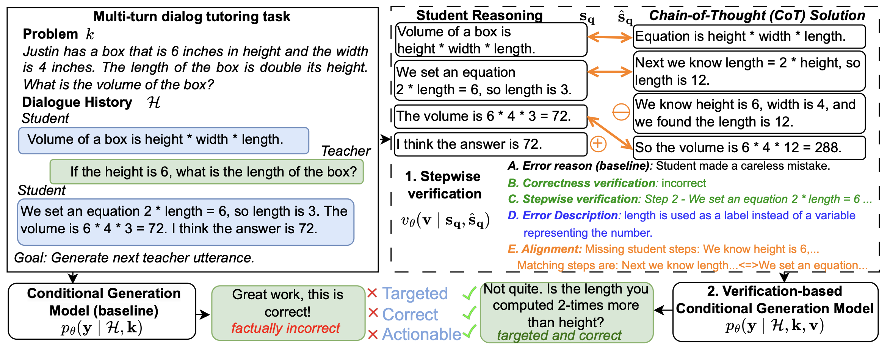

Stepwise Verification and Remediation of Student Reasoning Errors with Large Language Model Tutors


This repository contains dataset and code for the EMNLP 2024 paper "Stepwise Verification and Remediation of Student Reasoning Errors with Large Language Model Tutors".
Abstract
Large language models (LLMs) present an opportunity to scale high-quality personalized education to all...
Contact Persons
Affiliations

Getting Started
The code will be uploaded soon. Once available, install dependencies with:
pip install -r requirements.txtDataset
The dataset will be available in the dataset folder. It extends MathDial.
Running models & Evaluation
Verification
python verification/error_verification.py --setting overall_verification --model_name gpt3 --top_n_only 10Verification-based Generation
python verification_based_response/main.py --model_name gpt3 --settings baseline --top_n_only 10Citation
@inproceedings{daheim2024stepwise,
title={Stepwise Verification and Remediation of Student Reasoning Errors with Large Language Model Tutors},
author={Daheim, Nico and Macina, Jakub and Kapur, Manu and Gurevych, Iryna and Sachan, Mrinmaya},
booktitle = "Proceedings of the 2024 Conference on Empirical Methods in Natural Language Processing",
month = nov,
address = "Miami",
year="2024",
publisher = "Association for Computational Linguistics",
}License
This work is licensed under a Creative Commons Attribution-ShareAlike 4.0 International License.